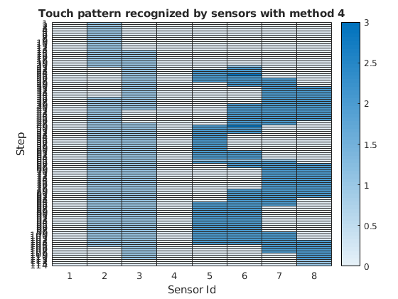

SlotineExperiment.m
This code aims at validating the experiment in the Wang's and Slotine's paper.
Author: Fulvio Mastrogiovanni Last modified on July 19, 2010.
Modified by Barbara Bruno & Jorhabib E. Gomez For the "Software Architectures for Robotics" course 2010/2011
And Davide Torielli & Fabio Fusaro For the "Software Architectures for Robotics" course 2017/2018
clear all; clc; % Read the flattened map file from disk and display it disp('Read the flattened calibrated map file from disk and display it') [matrixMap] = readMap('MiroMap.txt'); nSensors = length(matrixMap(:,1)); % Compute the coupling among the sensors disp('Compute the coupling matrix') nearestSensors = 2; % number of the nearest neighbours to consider gaussParam = 3; % Gaussian coupling function tuning parameter 3 couplingMatrix = coupling(nearestSensors, gaussParam, nSensors, matrixMap(: , 2:3)); % Read the reduced activation map file from disk and normalize it disp('Read the reduced activation map file from disk and normalize it') steps = 0; % number of row of input sequence to take in consideration (0 to take all rows) [I, steps] = ReadInput('activation_seq/headBody_caress',steps,matrixMap,nSensors); % Create and activate the non-linear oscillators and display their % responses disp('Create and activate the non-linear oscillators') ti = 0; % initial time for integration tf = 100; % final time for integration [T, Y] = ActivateOscillators(ti, tf, steps, I, nSensors, couplingMatrix); % Find oscillators cluster and display the heatmap of the touch pattern % recognized by the sensors disp('Find oscillators clusters'); [syncroMatrix, nTouch] = findSyncronizations(T, Y, tf, nSensors, steps, I, 4, 3);
Read the flattened calibrated map file from disk and display it Compute the coupling matrix Read the reduced activation map file from disk and normalize it Create and activate the non-linear oscillators Find oscillators clusters